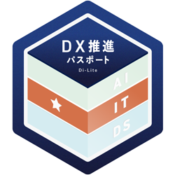
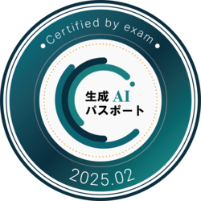
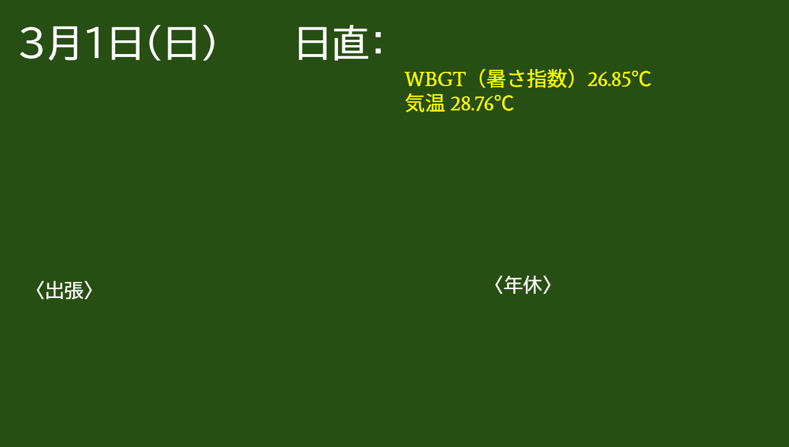
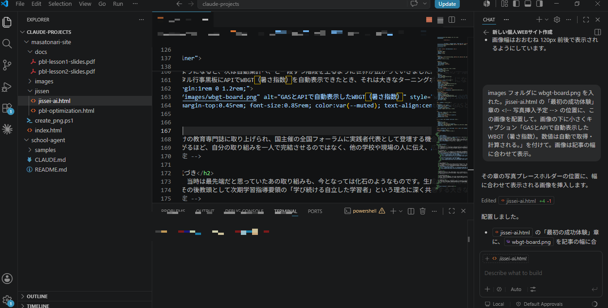

はじまり
前任校（東北の公立中学校）で、国のDX関連事業の指定校・生成AIの先行活用校として生成AI担当を任されたことが始まりでした。正直に言えば、当初はあまり期待されていなかった役回りだったように思います。しかも、当時の自分は、どう学べばよいのかも分からないまま、その役目を引き受けた状態でした。
そのことを知ったのは、ずっと後のことでした。全国の舞台を終え、私も校長も異動が決まった頃、校長からこう打ち明けられたのです。『初めはDX推進がメインで、生成AIがここまで広がるとは思っていなかった。正直、あまり期待していなかったんだ』と。期待されない付け足しのような担当——それが出発点だったと、そのとき初めて知りました。
独学の日々
生成AIを使い始めた黎明期は、今よりもハルシネーションが大きく、精度も低い時代でした。それでも、可能性を感じることはありました。そこで、独学で学び続けました。
学びながら、ITパスポートと生成AIパスポートを取得し、校内ではその知識を生かして、先生方に対して使い方の共有や相談の場を作るよう努めました。


最初の成功体験
出発点は、スプレッドシートの同じシートを30枚自動コピーするだけの、ごく小さなGASでした。最初はそれすら、何をすればよいのか分からない状態だったのですが、無料講座で仕組みを独学し、あとは生成AIと対話しながらコードを整えていくことができました。
それができるようになると、次は自動集計へ、と一段ずつ階段を上るように世界が広がっていきました。作業の手順を少しずつ自動化していくうちに、「これは自分でもできる」という感覚が、日々、確実に育っていきました。
そして、デジタル行事黒板にAPIでWBGT（暑さ指数）を自動表示できたとき、それは大きなターニングポイントになりました。プログラミングの専門家でなくても、生成AIと対話すれば、現場の課題を自分の手で自動化できる——その可能性を、体で理解した瞬間でした。

全国へ
実践が全国向けの教育専門誌に取り上げられ、国主催の全国フォーラムに実践者代表として登壇する機会を得ました。その中で一貫して掲げたのは、「どの学校でも実現可能な取り組みを」という考え方でした。
発信の場が広がるほど、自分の取り組みを一人で完結させるのではなく、他の学校や現場の人に伝え、広げていくことの意味が強く感じられました。
化石という気づき
正直に言えば、当時は最先端だと思っていたあの取り組みも、今となっては化石のようなものです。生成AIの進化はそれほど速い。だからこそ私は、「生成AIの取り組みは、常にアップデートし続けなければならない」と考えるようになりました。
この実感は、その後教頭として次期学習指導要領の「学び続ける自立した学習者」という理念に深く共感する大きな理由になりました。
そして、今
その学びは今も続いています。かつてのGASによる自動化は、今ではClaude CodeやVS Codeを使ったWebサイト構築へと発展しています。まさに、このサイト自体がその歩みの最新章です。
これからは、教育に特化したAIエージェントの構築にも挑戦していきたいと考えています。学びを止めず、現場とつながりながら、さらに実践を深めていきたいです。
